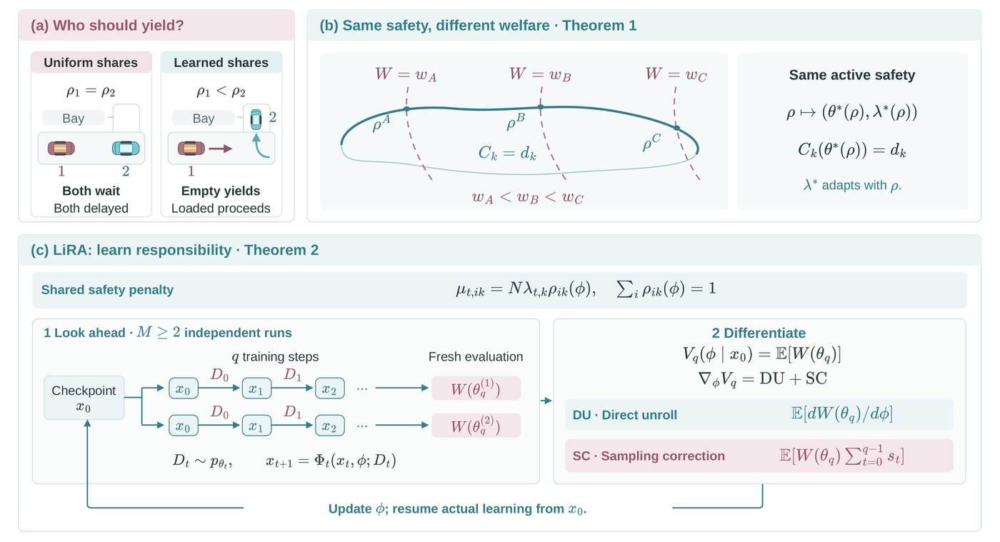

-
CityLearn
3 agents · grid demand cap
-
MABIM
400 agents · rejection caps
-
Harvest
7 agents · one shared cost
-
MetaDrive
4 agents · safety-event rate
TL;DR
A common Lagrange multiplier can enforce a shared cost budget, but it does not say which agents should bear the penalty. LiRA learns each agent’s share of the multiplier by optimizing social welfare, without modifying the original rewards or constraints.
Abstract
When multiple agents share a cost budget, a common Lagrange multiplier can enforce the aggregate constraint but does not determine how its penalty should be allocated across agents. Uniform penalties ignore heterogeneity in the rewards agents sacrifice, while agent-specific multipliers may still rely on the same aggregate cost signal. We introduce Lagrangian Responsibility Allocation (LiRA), which learns each agent's share of a common multiplier by optimizing social welfare over a finite training horizon. The multiplier enforces the aggregate budget, while responsibility shares redistribute its influence without modifying the original rewards or constraints. For convex games under standard regularity conditions, varying these shares induces a smooth family of normalized generalized Nash equilibria in which active constraints remain at their budgets while welfare varies. To optimize responsibility before convergence, we derive a welfare gradient that accounts for both learning updates and the induced change in data distribution. Across CityLearn, MABIM, Harvest, and MetaDrive, spanning 3 to 400 agents, LiRA improves average social welfare by up to 29% over uniform and agent-specific multiplier baselines. Grid and driving costs remain within budget, inventory violations decrease, and Harvest makes more effective use of available budget.
Split the penalty, keep the budget
The multiplier sets the scale of a shared constraint’s penalty. LiRA adds learnable shares that set its distribution across agents, leaving the budget enforced.

Welfare and shared costs across four tasks
LiRA’s mean welfare is highest in every domain.
| Task (N, K) | Outcome | Budget | Uniform | PAL | LiRA |
|---|---|---|---|---|---|
| CityLearn(3, 1) | Welfare (103) | – | −16.87 ±3.04 | −16.87 ±3.04 | −14.51 ±1.66 |
| Grid excess (kWh) | 28.76 | 28.44 ±5.97 | 28.44 ±5.97 | 28.73 ±7.48 | |
| MABIM(400, 2) | Welfare (106) | – | −596.31 ±5.00 | −597.27 ±3.76 | −591.36 ±4.48 |
| Rejections \(C_1\) (106) | 20.35 | 21.51 ±0.25 | 21.56 ±0.23 | 21.30 ±0.18 | |
| Rejections \(C_2\) (103) | 32.69 | 27.71 ±2.31 | 27.54 ±2.21 | 28.68 ±0.90 | |
| Harvest(7, 1) | Welfare | – | 42.73 ±12.22 | 44.73 ±3.79 | 50.27 ±2.53 |
| Shared cost | 68.00 | 33.24 ±10.08 | 33.38 ±5.18 | 36.82 ±2.40 | |
| MetaDrive(4, 1) | Welfare | – | 49.72 ±22.20 | 60.94 ±13.45 | 64.26 ±19.98 |
| Events / 103 steps | 1.00 | 1.017 ±0.343 | 1.337 ±1.466 | 0.890 ±0.407 |
Swipe the table sideways to see all columns.
Mean ± SD over matched training seeds (3; 6 for MetaDrive). Bold marks the highest welfare; in CityLearn, Uniform and PAL coincide.
Case study: who bears the burden in CityLearn?
Three buildings share one district grid cap. LiRA puts more responsibility on the two overcooled buildings (\(\rho=0.395\) and \(0.387\), against \(0.218\)), and these two cut their cooling the most. In this matched episode, welfare rises by 4.88k as district cap exceedance falls from 25.42 to 23.78 kWh.
Citation
@misc{cao2026lira,
title={Who Bears the Burden? Learning Responsibility for Shared Constraints in Multi-Agent Reinforcement Learning},
author={Cao, Xiaoyang and Li, Jingqi and Fu, Zhe and Bayen, Alexandre M.},
year={2026},
eprint={2610.07491},
archivePrefix={arXiv},
primaryClass={cs.LG},
url={https://arxiv.org/abs/2610.07491}
}